Family-owned in Dallas since 1987
Replacement windows, installed by the Foster family
Energy-efficient windows and sliding patio doors for Dallas–Fort Worth homes. You work directly with owner Logan Foster, from the first visit to the final walk-through.
- Lifetimetransferable warranty on every product
- 5 yearslabor warranty on every installation
- 20+ yearswith the same lead installers
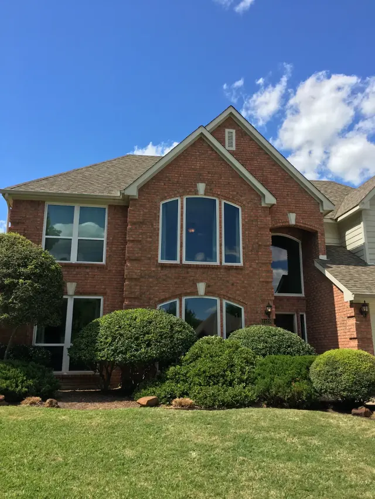
The three principles
- Quality materials.
- Quality workmanship.
- Reasonable prices.
Lynn Foster started the company on those three principles in 1987. His son Logan, the owner today, runs it on the same ones.
What sets the company apart
Three things the Fosters hold to on every job.
Quality materials
Every window meets or exceeds ENERGY STAR® criteria and is eligible for energy-efficiency tax credits when available. Each product carries a lifetime transferable warranty.
Quality workmanship
The lead installers have worked with the company for over 20 years. Installation is backed by a 5-year labor warranty, and the team is licensed and insured.
No run-around
If a window they installed has an issue, you call them, not the manufacturer. They handle warranty claims and service from start to finish.
What they install
Vinyl replacement windows and sliding patio doors from NT, Burris and Alside, in every common style.
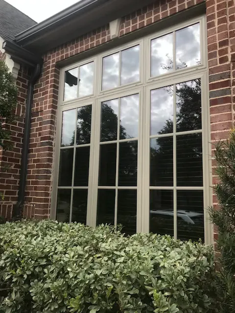
Windows
Seven product lines, from the cost-efficient Burris TectView AC to the Alside Sheffield premium double hung.
See the windows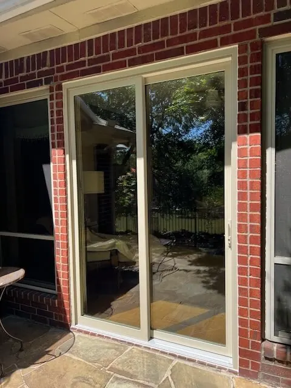
Sliding patio doors
NT KD650 and Win-Dor sliding doors, in 2, 3 and 4-panel configurations up to 16 by 8 feet.
See the doors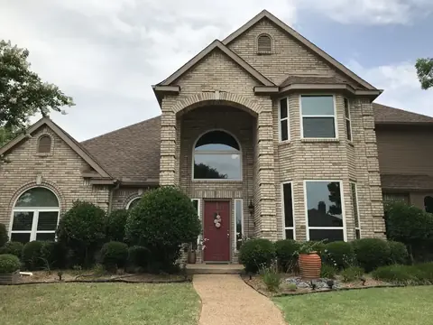
Window styles
Single hung, double hung, sliders, casements, picture, geometric, bay and bow. How each one opens.
Compare the styles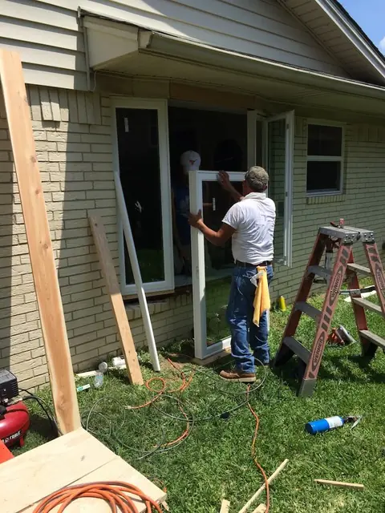
Installation day, done carefully
Window replacement is a major construction project. The crew takes the extra steps so the new windows look as good as they perform.
- Most blinds and window treatments taken down and put back up
- Every sticker and tag removed from the new glass
- Each window cleaned after it is installed
- Logan Foster visits during the installation
- A final walk-through with Logan when the job is done
Recent work
North Texas homes with windows replaced by the Foster crew.
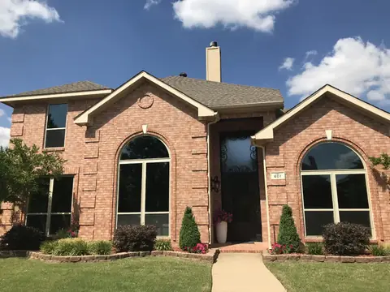
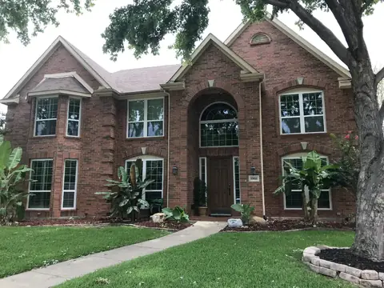
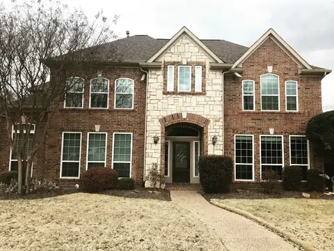
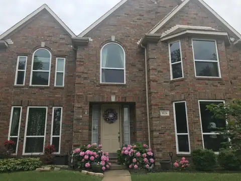
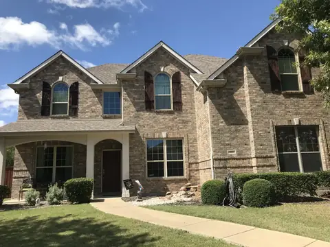
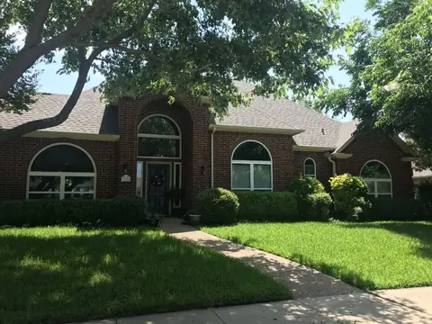
A customer review
“They did the entire job in 2 days and I have received raving compliments from my neighbors about how nice my windows look.”
Free consultation, anywhere in the Metroplex
Window replacement in Dallas and the surrounding areas, including Tarrant, Collin, Denton and Rockwall Counties.
- Dallas
- Plano
- Richardson
- McKinney
- Allen
- Flower Mound
- Garland
- Rockwall
- Rowlett
- Frisco
- Irving
- Phone
- (214) 319-8400
- info@fosterexteriors.com
- Office
- 1350 N Buckner Blvd #216, Dallas, TX 75218
- Hours
- Mon–Fri, 8:30 am – 5:00 pm
Evening and weekend appointments available